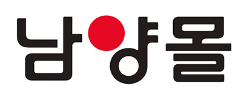
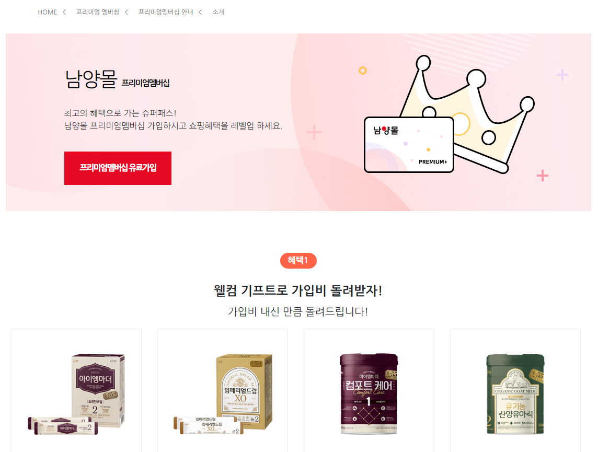
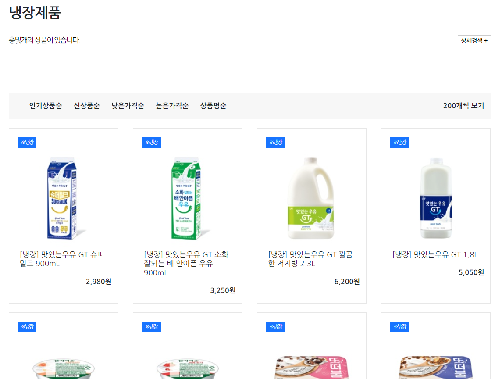

남양몰 리액트 클론코딩
🩵About NamyangMall

- 작업기간 : 2주
- 작업인원 : 1인 (100%)
- 사용언어 : react
- 참고사항 : 메인페이지1, 서브페이지7
기존 남양몰 사이트를 리액트로 클론코딩 했습니다. 서브페이지별 component를 만들어 서브페이지 7군데에 제품 UI패턴을 활용했습니다.
사이트 바로가기✔️PREVIEW

